02 de marzo de 2026
Matemáticas
Actividades: Identificar patrones numéricos, números pares e impares.
Concepto de mitad de un número. De manera escrita y oral se reforzó el concepto de número par e impar.
Para reforzaar: El concepto de mitad de un número.
Español
Actividades: Acompañamiento de maestras de apoyo y charla grupal.
Se usó el espacio para recalcar valores de convivencia.
Para reforzar: La escucha activa.
03 de marzo de 2026
Español
Actividades: Se repasó el Fonema /N/.
Se profundizó el uso de la letra N en diferentes combinaciones.
Se realizaron actividades de completado de palabras.
Para reforzar: combinaciones y completar palabras.


Naturales
Actividades: Se profundizó el tema de los seres vivos.
Se hizo la relación entre el proceso de crecimiento de las plantas y que los lápices provienen de la madera de los arboles.
Para reforzar: Recalcar la importancia de cuidar el medio ambiente.
04 de marzo de 2026
Matemáticas
Actividades: Se introdujo el concepto de números ordinales.
Se realizaron ejercicios sobre todo lo visto hasta ahora.
Para reforzar: Reforzar las centenas, evitar confundir números como EJ: "Escribir 1012 en lugar de de 112" o "Escribir 1008 en lugar de 108".
Se recomienda el uso del ábaco para estos casos.
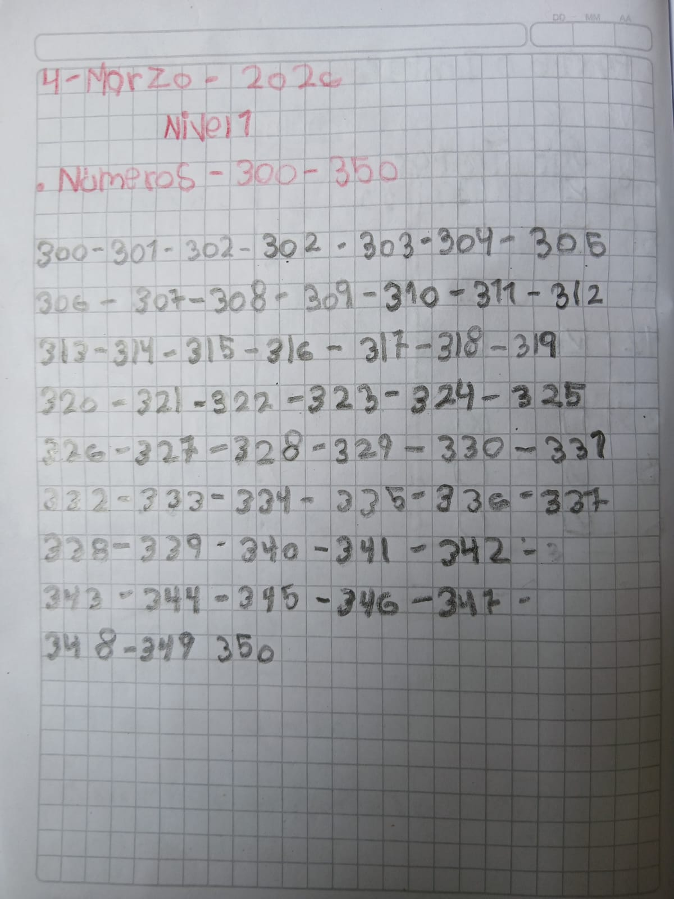
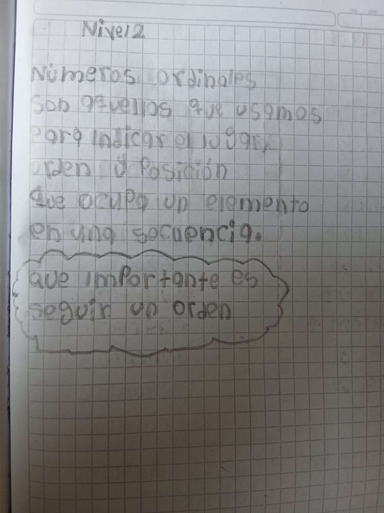
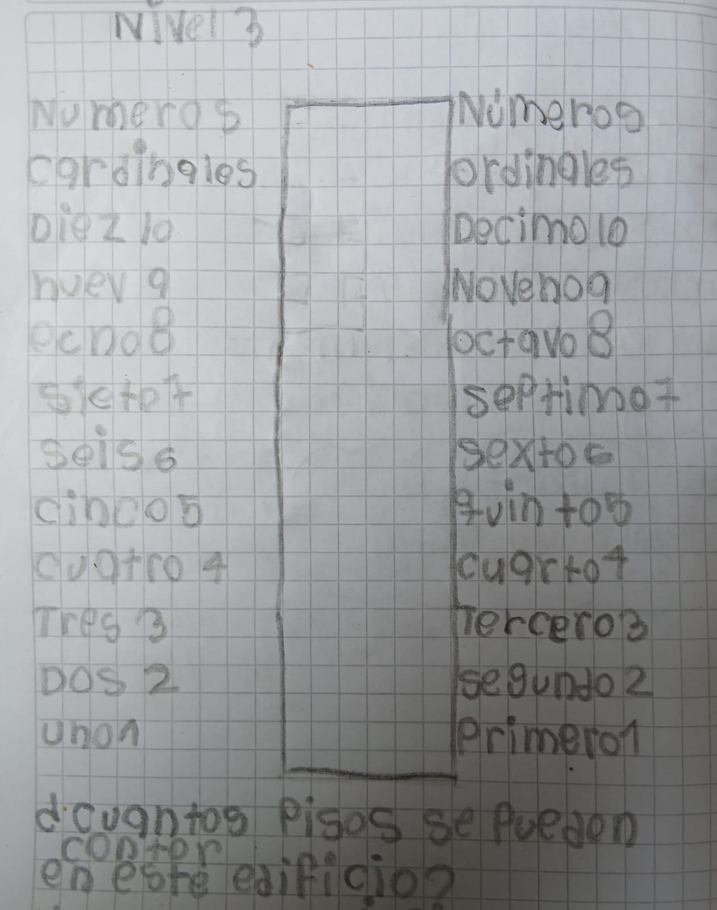
Sociales
Actividades: Reforzando el concepto de identidad.
Se habló del registro civil de nacimiento. (Nombre, Fecha de Nacimiento, Lugar de Nacimiento)
Para reforzar: Hacer la relación entre fecha de cumpleaños y fecha de nacimiento.
05 de marzo de 2026
Inglés
Actividades: Se reforzó el vocabulario de los colores en inglés
Se unificaron las actividades de Inglés con artistica.
Se introdujo brevemente el vocabulario de las figuras geométricas.
Para reforzar: Repetir el vocabulario de los colores en inglés.
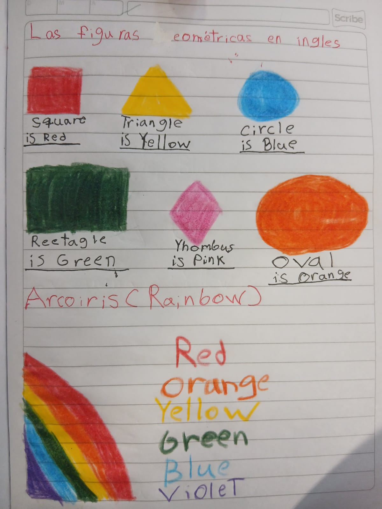
Ética y valores
Actividades: Reforzando los valores de respeto y honestidad.
Se realizaron actividades para fomentar el respeto y la honestidad.
Para reforzar: Inculcar estos valores en la vida diaria.
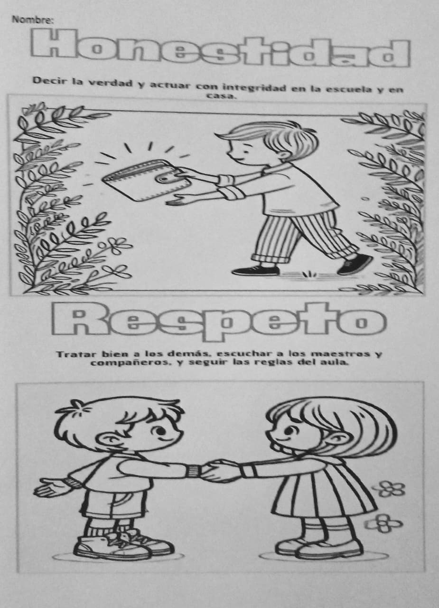
09 de marzo de 2026
Matemáticas
Actividades: Se reforzó el el concepto de números ordinales.
Primero, Segundo, Tercero... Décimo.
Para reforzar: Ejemplificar con objetos cotidianos como filas de personas, posiciones en una carrera, etc.
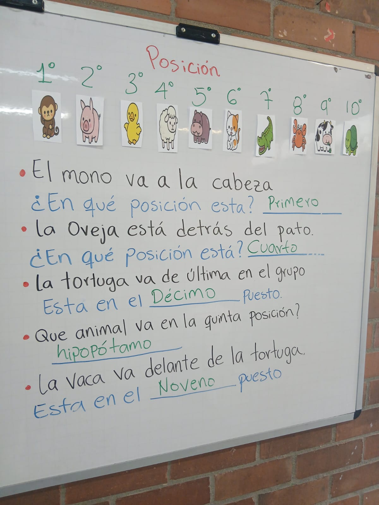
10 de marzo de 2026
Español
Actividades: Dictados y ejercicios de comprensión lectora.
Para reforzar: Lectura diaria en casa, enfocándose en la pronunciación y comprensión de palabras.
* Diferenciar entre d - b
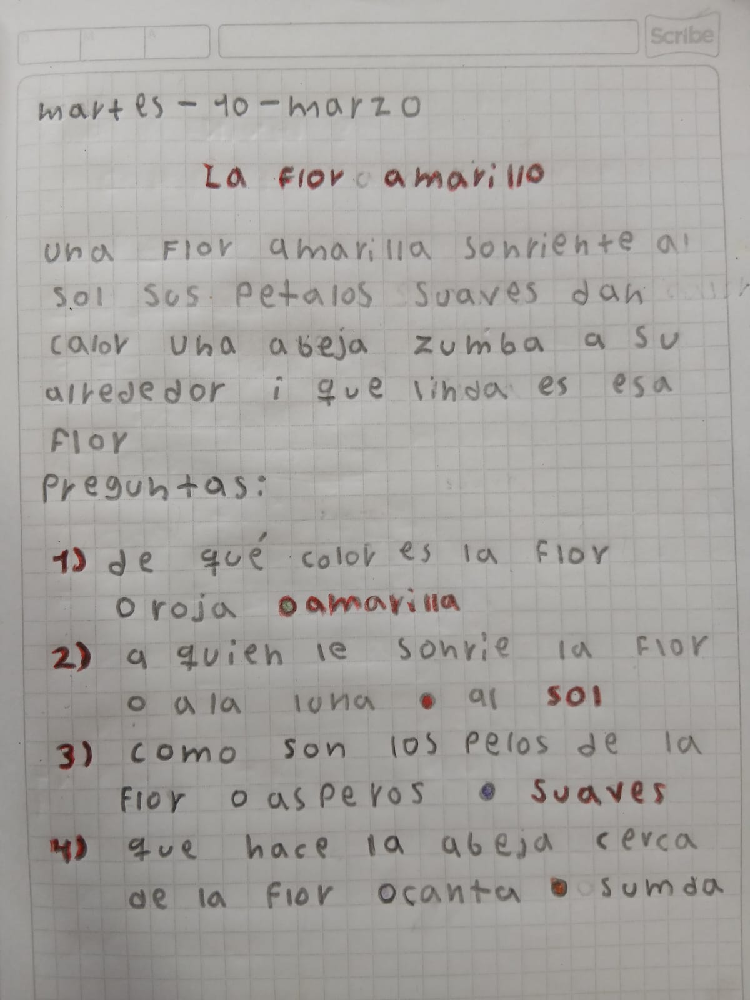
Naturales
Actividades: Las partes de una planta y su función.
Se reforzó la función de cada parte de la planta: raíz, tallo, hojas, flores y frutos.
Para reforzar: Inculcar la importancia de cuidar las plantas y el medio ambiente.

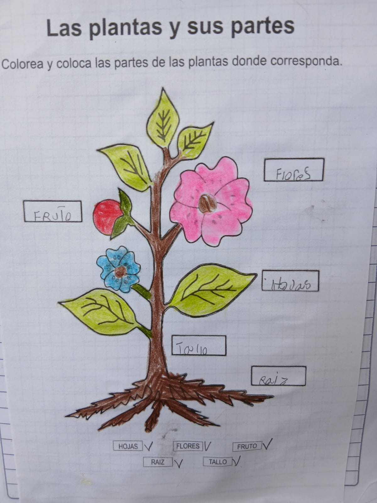
11 de marzo de 2026
Matemáticas
Actividades: Descomposición de números en centenas, decenas y unidades.
Para reforzar: reforzar el valor posicional de cada dígito en un número de tres cifras.
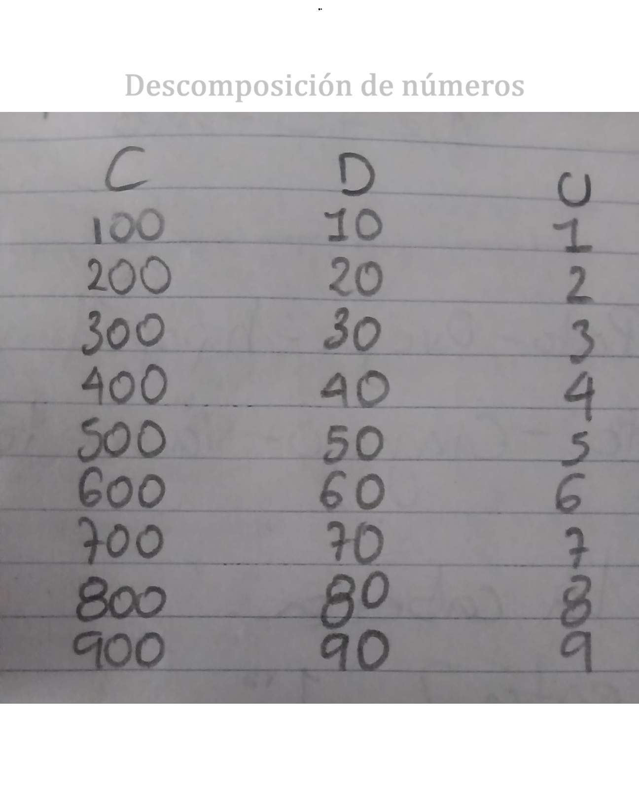
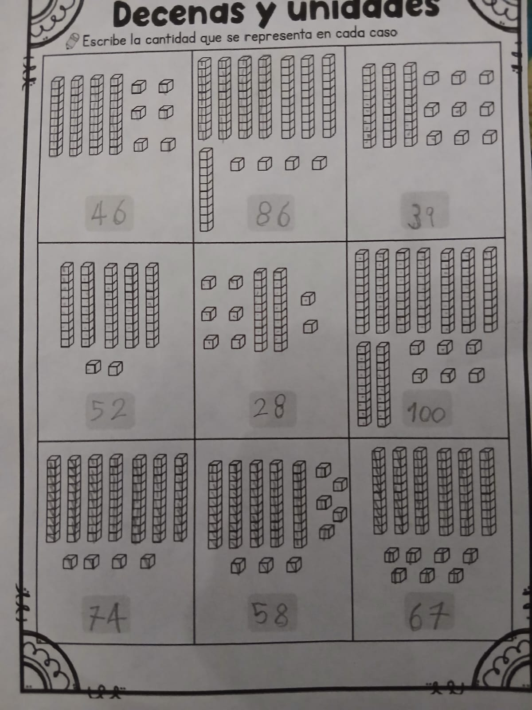
12 de marzo de 2026
Español
Actividades: Significado de palabras y su uso en oraciones.
Para reforzar: Ampliar el vocabulario a través de la lectura y la conversación diaria.
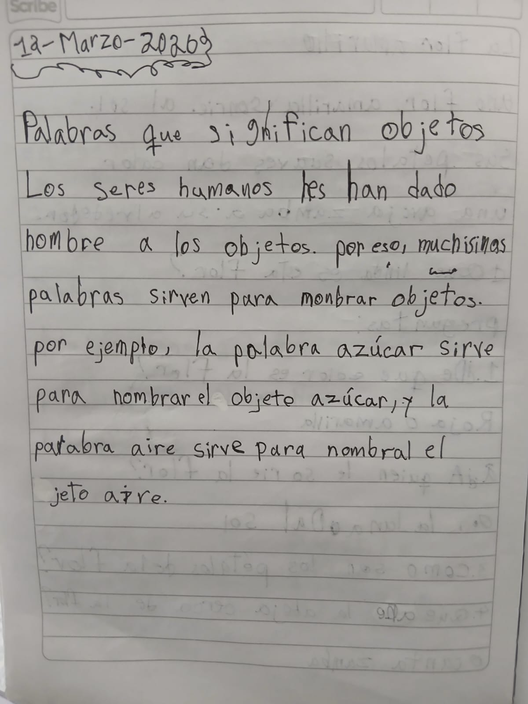
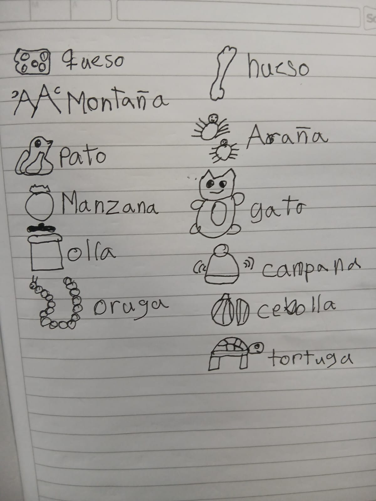
Tecnología
Actividades: Que es la tecnología y su impacto en la vida diaria.
Se discutió cómo la tecnología ha cambiado la forma en que vivimos, trabajamos y nos comunicamos.
Para reforzar: Cómo sería la vida sin tecnología y las herramientas tecnológicas que usamos a diario.
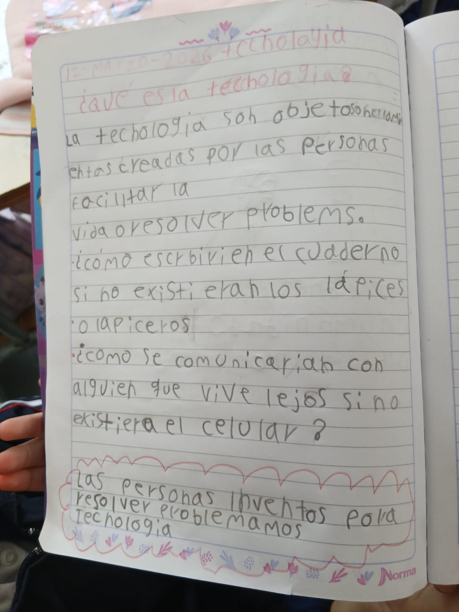
16 - 19 de marzo de 2026
Español
Actividades: Comprensión de textos cortos y ejercicios de escritura.
El perro que quería volar
Toby era un perro muy curioso.
Un día vio a los pájaros volando en el cielo y pensó:
—¡Yo también quiero volar!
Toby corrió al jardín, subió a una caja y saltó con todas sus fuerzas. Pero cayó al suelo. Entonces lo intentó otra vez. Y otra vez.
Su amiga Ana lo vio y comenzó a reír:
—Toby, los perros no pueden volar —dijo.
Toby movió la cola y respondió:
—Tal vez no puedo volar… pero sí puedo saltar muy alto.
Desde ese día, Toby se convirtió en el perro que más alto saltaba del barrio.
Se realizaron preguntas de comprensión literal e inferencial sobre el texto leído.
Para reforzar: Se recomienda la lectura diaria en casa, enfocándose en la pronunciación y comprensión de palabras.
Matemáticas
Actividades: Reforzamiento de la descomposición de números en centenas, decenas y unidades.
Se realizaron ejercicios prácticos para entender el valor posicional de cada dígito en un número de tres cifras.
Observa el ejemplo:
326 = 300 + 20 + 6
278 = ______ + ______ + ______
361 = ______ + ______ + ______
492 = ______ + ______ + ______
507 = ______ + ______ + ______
Para reforzar: Reforzar el valor posicional de cada dígito en un número de tres cifras, utilizando objetos cotidianos como fichas, bloques o ábacos para representar centenas, decenas y unidades.
24 de marzo de 2026
Español
Actividades: Se realizaron actividades de comprensión de textos cortos y ejercicios de escritura.
Lectura: La semilla curiosa
Una pequeña semilla vivía bajo la tierra.
Un día sintió calor del sol y un poco de agua de la lluvia. Entonces pensó:
—Quiero ver qué hay arriba.
La semilla empezó a crecer y salió de la tierra. Con el tiempo se convirtió en una planta con hojas verdes.
Ahora podía ver el cielo, sentir el viento y recibir la luz del sol. La semilla estaba muy feliz.
📌 Comprensión literal
- ¿Dónde vivía la semilla?
- ¿Qué sintió la semilla?
- ¿Qué quería ver la semilla?
- ¿En qué se convirtió la semilla?
Para reforzar: Se recomienda la lectura diaria en casa, enfocándose en la pronunciación y comprensión de palabras, así como en la capacidad de responder preguntas sobre el texto leído.
Naturales
Actividades: Actividad sobre las plantas y para qué siven.
Se realizaron actividades para fomentar la comprensión de las partes de una planta y su función, así como la importancia de cuidar el medio ambiente.
Concienciación de la planta como recurso vital y su papel en el ecosistema.
Las plantas nos ayudan porque nos dan recursos (alimentos, medicinas, materiales).
Para reforzar: Inculcar la importancia de cuidar las plantas y el medio ambiente.
25 de marzo de 2026
Matemáticas
Actividades: Reforzamieno del valor posicional de cada dígito en un número de tres cifras.
Prueba de comprensión del concepto de valor posicional.
Para reforzar: Reforzar el valor posicional de cada dígito en un número de tres cifras. (C, D, U)
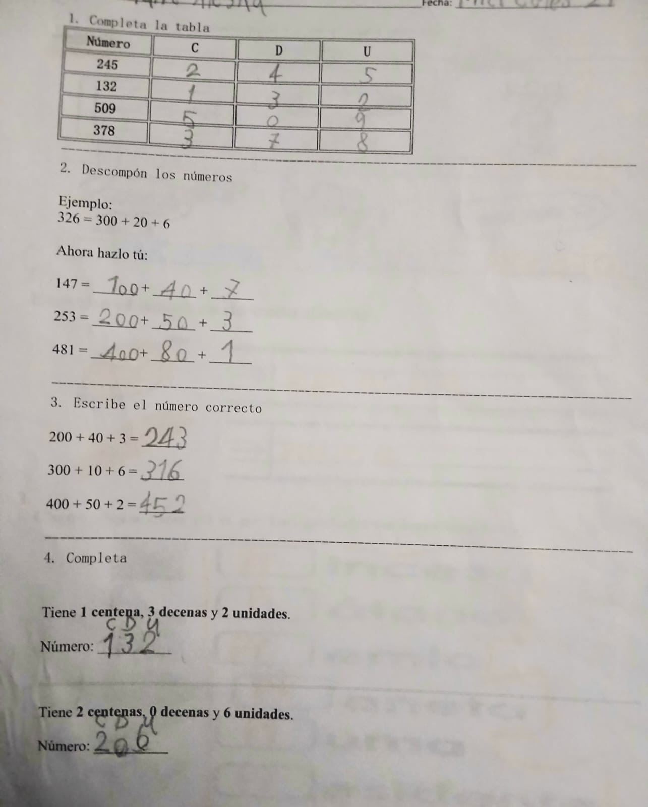
Sociales
Actividades: La Familia.
La familia como grupo de personas que viven juntas y se cuidan mutuamente.
Para reforzar: Concienciar sobre la importancia de la familia y los valores de respeto, amor y apoyo dentro del núcleo familiar.
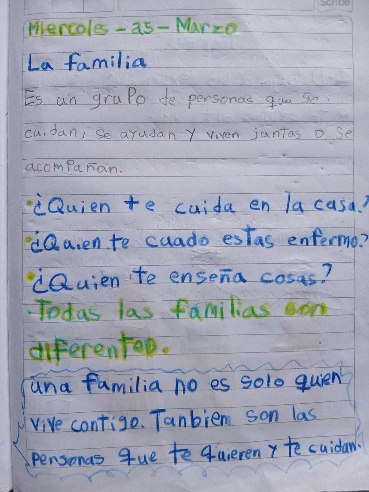
06 de abril de 2026
Matemáticas
Actividades: Se hizo un repaso general sobre todo lo visto hasta ahora, con énfasis en la descomposición de números en centenas, decenas y unidades.
Para reforzar: Uso del abaco para entender mejor el valor posicional de cada dígito en un número de tres cifras.
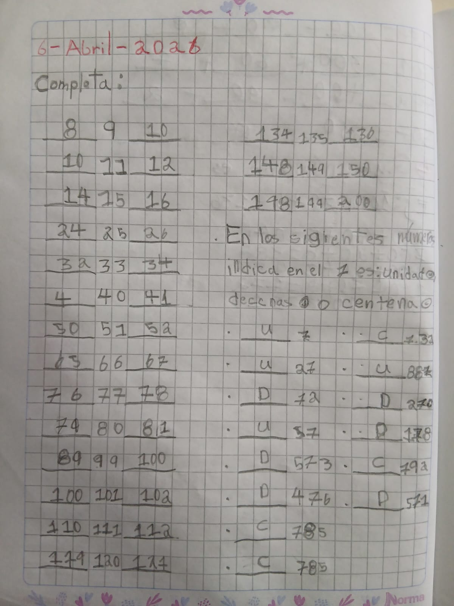
Español
Actividades: Se realizaron actividades de comprensión de textos cortos y ejercicios de escritura.
Para reforzar: lectura diaria en casa, enfocándose en la pronunciación y comprensión de palabras.07 de abril de 2026
Español
Actividades: Se hizo un repaso general sobre todo lo visto hasta ahora, con énfasis en la comprensión de textos cortos y ejercicios de
Practica de combinación de letras "Tr"
Para reforzar: Practicaar la combinación de letras "Tr" y lectura diaria en casa, enfocándose en la pronunciación y comprensión de

Naturales
Actividades: Repaso general sobre los seres vivos, con énfasis en las partes de una planta y su función.
Para reforzar: Importancia de cuidar las plantas y el medio ambiente, así como la función de cada parte de la planta: raíz, tallo, hojas, flores y frutos.
08 de abril de 2026
Matemáticas
Actividades: Refuerzo sobre el valor posicional de cada dígito en un número de tres cifras, utilizando herramientas visuales.
Importancia de entender el valor posicional en la resolución de problemas matemáticos.
Para reforzar: Uso del ábaco para representar números de tres cifras.

Sociales
Actividades: Normas sociales y convivencia.
Se discutió la importancia de seguir normas sociales para una convivencia armoniosa en la comunidad.
Para reforzar: Inculcar el respeto por las normas sociales y la importancia de la convivencia pacífica en la comunidad.